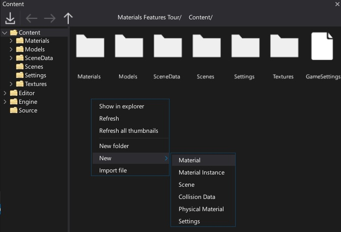
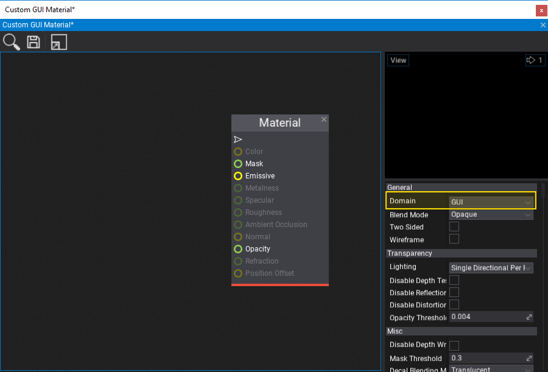
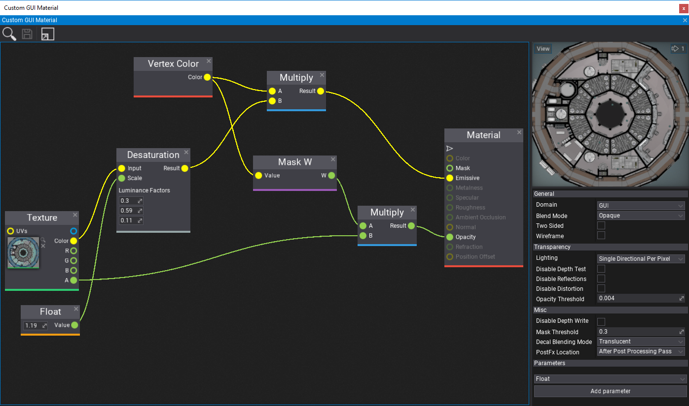
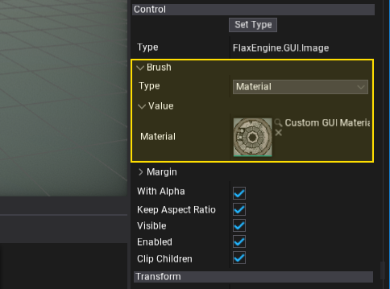
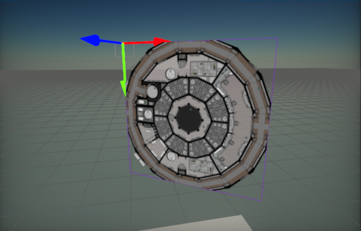

HOWTO: Create Custom GUI Material
In this tutorial, you will learn how to create a GUI material that can be used to perform custom rendering for UI components in your game. Follow these steps to prepare a simple material that uses a texture with a tint overlay and saturation control.
1. Creating an Image
The first step is to add a Image control (with a UI Control and UI Canvas).
2. Create a new material asset
Right click in the content window and select option New -> Material. Then specify its name and confirm by pressing enter. Double-click on the created asset and start editing the material.

3. Set the domain to GUI

Use the material properties panel and set the material domain to GUI. The generated material shader will then be compatible with the GUI rendering pipeline.
4. Setup the material graph
In this step you need to create a complete material. You can use the nodes network based on the following screenshot. To learn more about creating materials and using material parameters see the related documentation here.

5. Assign the material
The last step is to assign the created material asset to the Image brush property. To do so, you can drag and drop it or click on the arrow symbol and search for it.

6. See the results!
Finally, you can see the results of your work. You can also change the constant values and texture to material parameters to use them from C# code or to override in a Material Instances.
